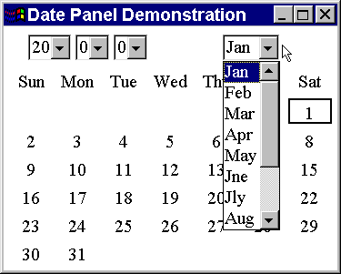
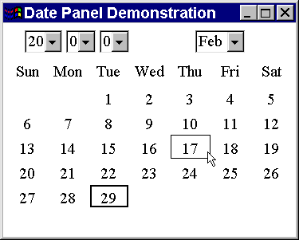
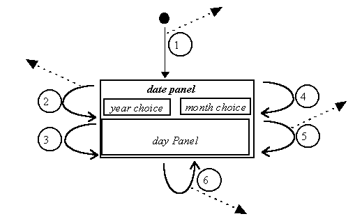
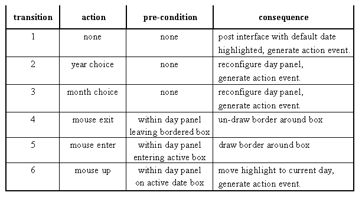

The second artifact to be developed in this chapter is intended to be used for the input of a calendar date in an unambiguous and error free manner. When a user is asked to input a calendar date into a text field there is the possibility that they might type in an invalid date, for example the 30th February in any year.
There is also a potential ambiguity if the date is required as a sequence of two digits, two digits and two or four digits; for example 12/06/1996. In the conventional European format this is interpreted as the twelfth day of the sixth month in 1996: however, in the American convention this would be interpreted as the sixth day of the twelfth month in 1996. This problem could be minimized by using a prompt such as 'Please enter the date (dd/mm/yyyy)'. However, this requires the user to be trained to realize that dd means the day of the month, mm the month number and yyyy the year. It is also possible, if not probable, that an American user would not attend to this and still enter the date using the mm/dd/yyyy format.
Requiring the date to be input in a format such as 12 Dec 1996 also has problems, with internationalization. The literal "Dec" assumes that the user understands English and the format is also prone to input errors, for example the mis-typing of "Dec" as "Drc". The DatePanel which will be developed in this part of the chapter is intended to remove these possible ambiguities and problems. The appearance of a DatePanel is shown in Figure 3.7.

Figure 3.7 A DatePanel component showing 1st January 2000.
The upper left part of a DatePanel allows the user to indicate, from left to right: the century, the decade and the year, using option menus. The upper right hand part of the panel allows the user to indicate the month, using another option menu. Every time a different year or a different month is selected the lower part of the panel will reconfigure itself to show the days of the month selected. For example Figure 3.7 shows that there are 31 days in January in the year 2000 and that the first day of the month falls on a Saturday. Figure 3.8 shows that there are 29 days in February in the year 2000 (2000 is a leap year) and that the first day of the month falls on a Tuesday.
The labels used on the DatePanel in this illustration are in English and the implementation as presented in this chapter will assume that English will always be used. The techniques which can be used to allow a DatePanel instance to be automatically configured to the different linguistic environments where it is used will be introduced in Chapter 9. Ideally an artifact such as this should be prepared for international use right from the very beginning of its design. However this would additionally complicate what is already a rather complex example, accordingly internationalization considerations will be left to another chapter.

Figure 3.8 A DatePanel component showing February 2000.
Figure 3.8 indicates that the current date represented by the panel is the 29th Feb, shown by the highlight surrounding 29. The mouse pointer is currently over 17 and this is indicated to the user by the light border surrounding it. As the user moves the mouse pointer around the days of the month the border is drawn and un-drawn around the date which it is currently over. If the user presses and releases the mouse button whilst it is over a date then it will become the current date, confirmed to the user by the moving of the highlight from the old date to the new current date. The state transition diagram for this behaviour is given in Figure 3.9.

Figure 3.9 The DatePanel state transition diagram.
This state transition diagram uses numbers to label the transitions which are keyed to Table 3.2. This has been done in order to keep the STD uncomplicated; although in this example the effect might be minimal, more complicated STDs benefit from this convention. The dashed arrows leaving the diagram indicate the generation of events by this component which can be listened to by registered listeners who wish to be informed that the date has changed. The diagram also provides names for the constituent components of a DatePanel, with all three of the year choice option menus collected together for convenience.

Table 3.2 State table for the DatePanel STD in Figure 3.9.
The single state on the STD and the minimal pre-conditions in the state table suggest again that the interface should be simple and intuitive to use. Transition 1 occurs when a date panel is first shown and generates an ActionEvent as it is configured for some specified initial date.
Transition 2 is taken when the user selects a different year either by selecting a different century, or a different decade, or a different year. The consequence of this transition is for the day panel to reconfigure itself to indicate the pattern of days in the year and month now selected. Transition 3 is essentially identical but is triggered by the user choosing a different month from the month choice option menu.
The reconfiguration of the day panel results in the day boxes within it being changed to indicate the pattern of days in the current month and year indicated by the year choice and month choice components. For example, in Figure 3.6 thirty one days are laid out starting at the rightmost box on the top row, whereas in Figure 3.7 only twenty nine days are laid out starting at the third box from the left on the top row. Whatever the configuration a box containing a day number is regarded as an active box and a blank box is regarded as an inactive box.
Transition 4 occurs when the user moves the mouse pointer outside the scope of the day box which is currently bordered and results in that box becoming unbordered. Transition 5 occurs when the mouse pointer moves into the scope of an active box and results in it becoming bordered. The border is the thin rectangle surrounding the day number and is provided to confirm to the user the day currently primed for selection, which might not always be obvious from the location of the pointer. The use of two distinct transitions for this behavior implies that if the mouse pointer is ever outside the scope of any of the active boxes then none of the day boxes will be bordered.
Transition 6 can only occur when the mouse pointer is within an active box and is triggered by a mouse button up event. It results in the highlight being moved from the currently highlighted day to the day which triggered the mouse up event. Unlike the bordering of a day box one, and only one, day box must always be highlighted and is shown as a thick rectangle surrounding the day number.
The four transitions which result in the currently indicated date being changed, 1, 2, 3 and 6, also have the consequence of generating an actionEvent. A client of this component can intercept this event and handle it in order to inform the other parts of the interface that the date indicated by the user has changed. This will be illustrated in the demonstration client below.
Design Advice
It is better to prevent the user from making 'errors' than to allow them to make 'errors' and have to 'correct' them.